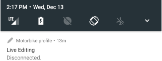
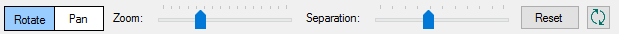

Live Editing in Native Mobile Applications
When prototyping an application, one of the most time-consuming tasks is refining the Look&Feel (or User Interface, UI) and the User Experience (UX). In order to simplify this task, GeneXus 15 introduces a feature that allows you to change the application state in real-time from GeneXus IDE without saving the modified objects.
Native Mobile Applications support changes for the following objects, including properties and client-side events.
- Theme-class properties that the application is currently using, including transformations.
- Languages and any translation that the application is currently using.
- Layout or user events of any Panel or WorkWith for Native Mobile.
In this article, you can find the usage principles of this feature, which options are provided, and how you can be more productive designing a Native Mobile Application. But first, take a look at how it works. Look how changes from GeneXus (left-side) are automatically displayed on the device (right-side).
Live Editing
Live Editing is a revolutionary way to design applications: the moment you make a change in the design, you can easily observe its effect, giving our application-making process a much more natural flow. It works as client-server architecture, where client-side will be a set of devices and the server-side will be GeneXus IDE. In such conditions, there must be a network connection between GeneXus and the devices.
In order to enable it, set Live Editing mode from GeneXus toolbar and re-run your application.

Then, will appear a Live Editing tab listing every device (physical or simulator) attached to your application with other information described below.
Endpoint information
This information will be used for every device in order to be attached to GeneXus.
| Endpoints | Endpoints list where GeneXus IDE resides (a set of IPs and hostnames). |
| Port | Port number where Live Editing will serve. |
Attached devices
Every device detected by Live Editing will be displayed in a list. Those devices that are currently connected will appear with a green icon (), and those disconnected with a gray icon ().
| Name | Physical or simulator device name. |
| Theme | Theme object used for such device. |
| Language | Language object used for such device according to user preference language. |
| OS | Operative system running on the device. In the image example, you have both Android and iOS. |
Also, every device will have a Live Inspector radio-button for enabling real-time changes on that device when it is connected (refer to next section). It can be only one device enabled in this mode at the time, and there will be a refresh button () in case you need to refresh Live Inspector content.
On the other hand, the device will inform you once it has been attached (or not) to GeneXus by displaying a message.
| Platform | Android | iOS |
| Connecting | ||
| Connected | ||
| Disconnected |  |
Live Inspector
The Live Inspector will allow you to explore and map run-time object with the design-time objects in a visual way in order to identify/locate objects and controls as well as change their appearance. Eventually this inspection involves multiple objects (e.g. with split or slide navigation style).
To activate the Live Inspector you need to have the application in runtime mode with Live Editing enabled. After that, press the Live Editing tab's refresh button ().
In Live Inspector window, you can differentiate three zones.
Aspect options bars
A set of options that allow us to change how you see the application in the design zone.

| Rotate/Pan radio-button | Set mouse scrolling behavior. When Rotate is set, mouse gestures will rotate the layout displayed. When Pan is set, mouse gestures will move the layout displayed. Both can be used and switched by holding/unholding the CTRL key while the mouse is moved. |
||||
| Zoom slider | Allows you to zoom in/out the layout displayed. | ||||
| Separation slider | Allows you to separate layout layers.
|
||||
| Reset button | Reset to default settings in Zoom terms. | ||||
| Refresh button () | Refresh the content of Live Inspector respect to the device. |
Content option bar
A set of options that allow us to hide or display auxiliary content.
| Show/Hide Object button | Show or hide objects/layers of the application when there is more than one (e.g. Section of WorkWithDevices or SD Component control). For example, by clicking on this button, it will display a list of the object embedded in that panel (all checked by default). If you uncheck Tracks object, Live Inspector will not show it but will stay visible on the device. |
||||||
| Draw combo-box | Indicate if Live Inspector will show only content, only wireframes or both. For example,
|
||||||
| Identify Scroll checkbox | Display a scroll indicator. | ||||||
| Show Device Frame checkbox | Simulate a device frame.
|
||||||
| Clip to Device Frame checkbox | When it is checked, Live Inspector only displays the current content in the application, but if exists no visible content (e.g. in an unselected tab) it can be displayed by unchecking this option. Based on the example, You have a tab control and the application is displaying only the first tab content. By default (option checked) Live Inspector will display only this content, but if you uncheck this option you can display the hidden content on the second tab (in this case, a grid control). |

Design zone
In this window's section, you have the real-time preview of their application. In addition to being able to move/rotate the current layout or separate its layers, every content can be clicked in order to display contextual information about it.
| Object | Link to the current object. By clicking on it, such object will be opened. |
| Control | Link to the selected control. When you click on it, it will display its respective properties that can be modified and visualized at runtime |
| Class | Link to the theme-class applied to the selected control. Applies the same behavior as Control link but for the theme-class properties. It may have other classes referenced by the main class (e.g. TextBlocks for Label Class, or GridRows for Odd/even Row Class in Grid theme-class). |
| Size | The size in dips of the selected control. |
| Position | The position of the selected control giving by <x,y> coordinates in dips. |
Notes
- Menu (ex Dashboard) object is not supported.
- Server-side events (such as Start, Refresh, and Load) cannot be tested with Live Editing because they are executed in the server-side (not in the device).
- Live Editing only works with the compiled application. Knowledge Base Navigator (KBN) is not supported.
- Live Inspector doesn't work in Windows 7.
Availability
This feature is available as of GeneXus 15.
Videos
 GeneXus Meeting 26 - Live Editing: achieving a professional UX was never so easy
GeneXus Meeting 26 - Live Editing: achieving a professional UX was never so easy
| Backlinks | |
| Getting Started with tvOS | Getting Started with watchOS |
| Toc:Live Editing | Toc:Native Mobile Applications Development |